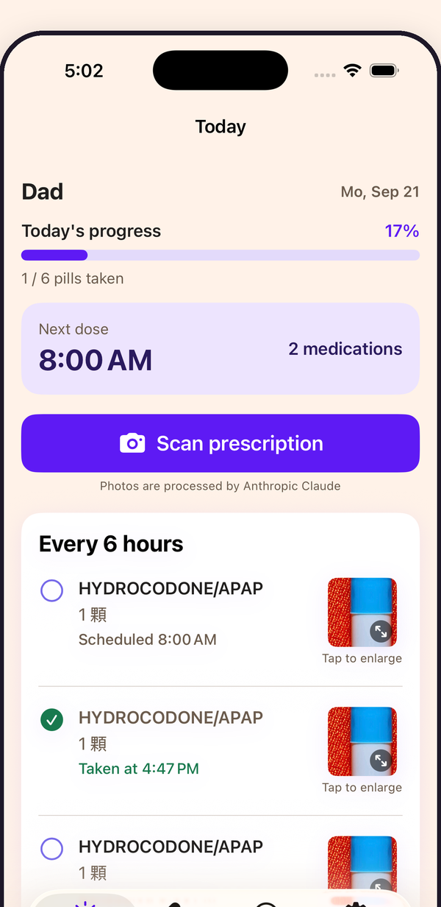
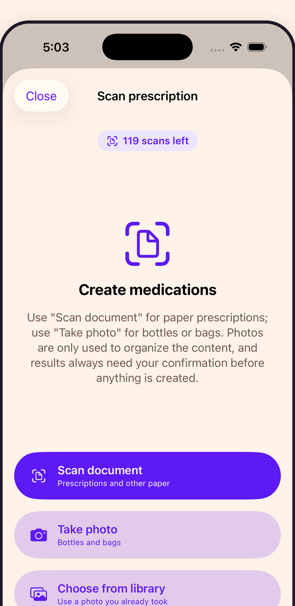
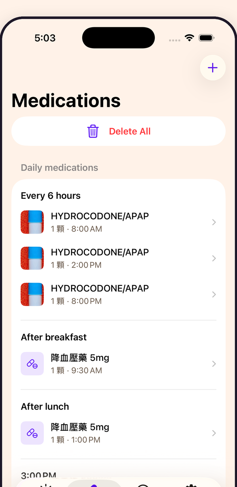
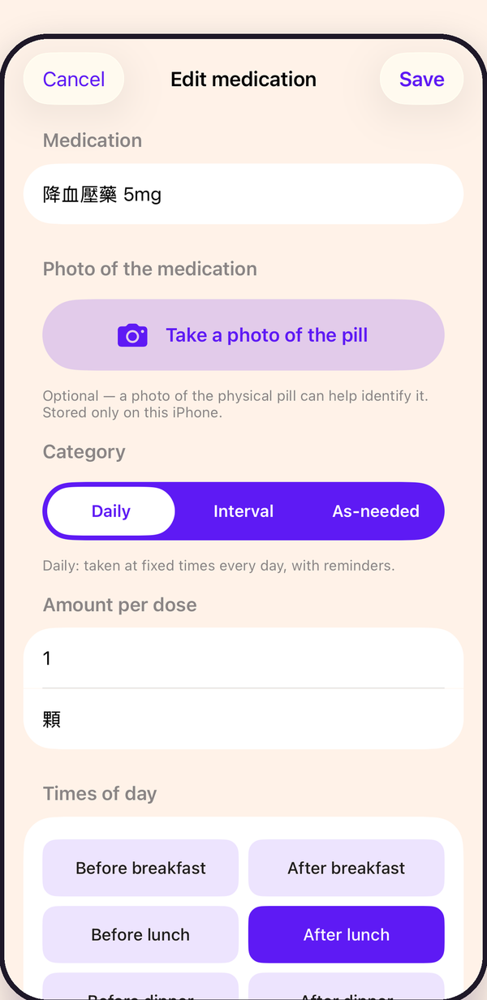
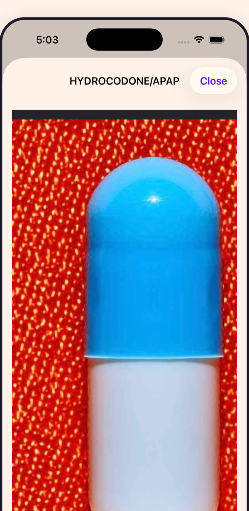

What Ontimo does
Ontimo started with my dad. He takes several medicines a day, each from a different bag, each on its own schedule. The hard part was never the taking. It was remembering which one, when.
So instead of copying it all out by hand, or relying on memory, you photograph it. A prescription bag, a pharmacy label, a paper prescription. Ontimo fills in the medicine, the dose and the timing.
After that it does the reminding. It remembers what's been taken, and you can save a photo of each pill so the ones that look alike don't get mixed up. Made in Taiwan.

Features
-
AI label scanning
Photograph a bag, bottle or prescription sheet and the medicine list builds itself. Every result waits for your confirmation.
-
Meal-time and interval reminders
Before or after meals, or every 4, 6 or 12 hours. Meal-based doses move when your meal times do.
-
Dose history
See the day's progress at a glance, and what was taken, missed or is still due.
-
Pill photos
Save a photo of each medicine so similar-looking pills are never confused.
-
As-needed medicines
Take them when needed, or set up to four reminder times of your own.
-
Three languages
Traditional Chinese, English and Indonesian, for households where carers and family don't share one language.
Inside the app
-

Scan a prescription, bag or bottle -

Every medicine, grouped by schedule -

Before or after meals, in one tap -

A photo of each pill, so no mix-ups
Get Ontimo
Ontimo is available for iPhone. The Android version is in development.